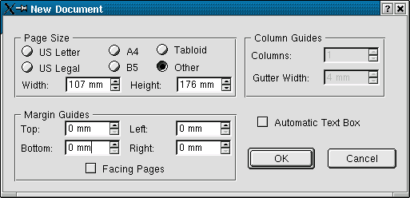
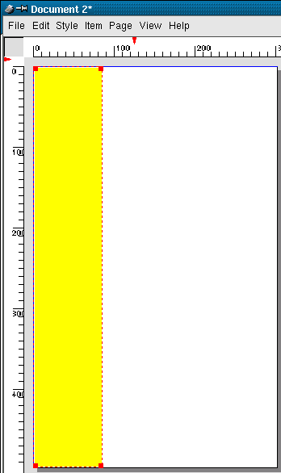
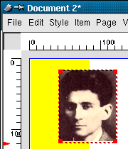
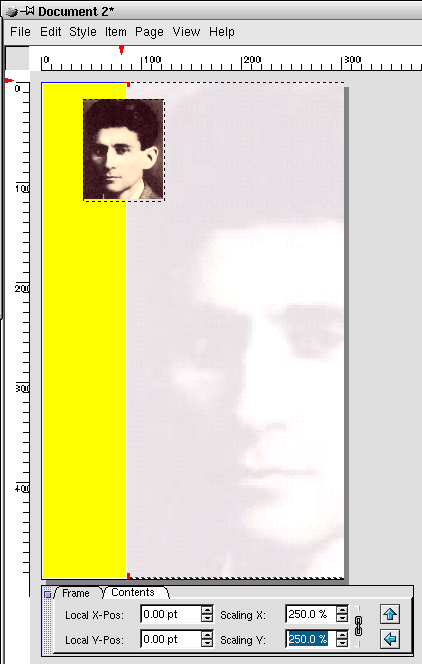
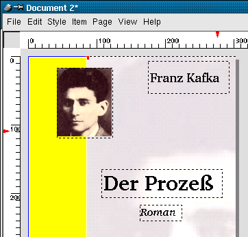
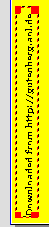

5.2 Das Buch-Cover
Erstellen Sie über das Menü File / New ein neues Dokument mit folgenden Werten:

Ziehen Sie anschließend ein Rechteck ( ) am linken
Rand des Dokuments auf. Färben Sie es entweder über das Menü Item / Modify oder durch einen Doppelklick
auf den entsprechenden Eintrag in der Farbpalette (siehe auch Punkt 2.2.3, "Die Farbpalette") gelb ein. Das Ergebnis sollte
ungefähr so aussehen:
) am linken
Rand des Dokuments auf. Färben Sie es entweder über das Menü Item / Modify oder durch einen Doppelklick
auf den entsprechenden Eintrag in der Farbpalette (siehe auch Punkt 2.2.3, "Die Farbpalette") gelb ein. Das Ergebnis sollte
ungefähr so aussehen:

Erstellen Sie nun einen Bildrahmen  und laden Sie
mittels des Menüs File / Get Picture die Datei "kafka.jpg" aus dem Unterverzeichnis "tutorial".
und laden Sie
mittels des Menüs File / Get Picture die Datei "kafka.jpg" aus dem Unterverzeichnis "tutorial".
Skalieren Sie das Bild um 50 % (Maßpalette oder via Item / Modify) und legen Sie es im oberen Seitenteil halb über das
gelbe Rechteck:

Erstellen Sie einen weiteren Bildrahmen und laden Sie das Bild "kafka_transparent.jpg" 1. Legen und skalieren Sie diesen Bilderrahmen so, dass
er die komplette weisse Fläche der Seite einnimmt. Damit auch das enthaltene Bild die komplette weisse Fläche überdeckt
skalieren Sie es auf 250 %. Da das Bild noch im Vordergrund liegt und Teile der anderen Objekte überdeckt, bringen Sie es
bitte mittels Item / Send to Back in den Hintergrund:

Als nächstes werden nacheinander 3 Textrahmen aufgezogen und die unten abgebildeten Texte eingegeben. Schriftart, Größe etc.
können Sie ganz nach Geschmack festlegen:

Der nächste Textrahmen wurde genau wie die vorangegangenen erstellt und dann mittels  um -270 Grad gedreht:
um -270 Grad gedreht:

Und so sollte das Ganze dann fertig aussehen: [PDF-Datei]
1 Bei diesem Bild handelt es sich um eine mittels "The GIMP"
leicht veränderte Version des Bildes "kafka.jpg".